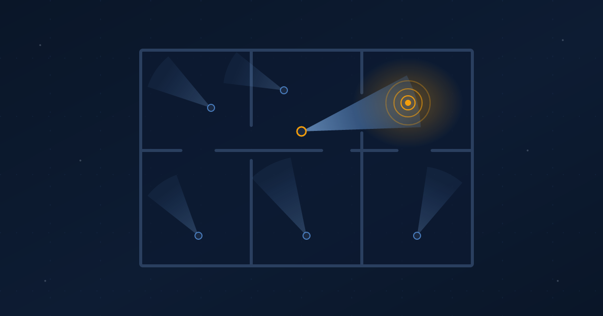

Everyone Has a Flashlight
AI gave everyone, attackers included, the same flashlight. Knowing where to point it is now the advantage.
Ibrahim AbuAlhaol, PhD, P.Eng., SMIEEE
AI Technical Lead
Imagine everyone suddenly gets a powerful flashlight: you, your neighbours, and the burglar. It lights up whatever you point it at. It does not tell you where to point it. The person who knows the house still knows which room to check first.
That picture came out of a discussion with Salah Abualhoul [7] about PHP2Shell, the flaw that led governments to take their own websites offline this month. This is where we landed.
AI was the flashlight
PHP runs 69% of the websites whose server-side language is known [2], and Germany, France and four other countries took sites offline over this flaw [1]. The headlines said AI found it. The researcher who reported it first did use a public model, but what aimed it was his twenty years of knowing where PHP's bugs hide. He writes that no model finds "all bugs" with simple prompts [3].
Once he had pointed the way, others arrived fast. Another team found the same flaws within weeks [4], and someone tried the attack four days before it was announced [5]. A flashlight is not an advantage when everyone has one, and the burglar has the same one you do. The advantage is knowing the house.
The noise nobody checked
The uncomfortable part is that this noise was heard before. The problem came up in a 2024 audit and was left because nobody could prove it was exploitable [3]. The PHP Foundation now calls that a structural failure [6].
The rule was not foolish. "No proof, no fix" made sense when proving it took an expert team months; nobody wakes the whole house for every creak. But this year the proof took one person about two weeks. When checking is that cheap for you, it is that cheap for the burglar. The rule has to flip: if you hear a noise near an open door, act as if someone is already inside.
Who walks, and who decides
Let AI agents do the walking: check every room, every server, every copy of the same mistake. Keep people on two decisions: which room matters, and what to do about it now. And write down what your experts know about the house, so the agents walk where they would.
Most teams are buying brighter flashlights. Fewer are investing in the people who know where to point them, or giving those people the authority to act before the proof arrives.
AI sets the pace. People set the direction.
What leaders should do
- Retire "wait for proof." If a weakness is plausible and exposed to the internet, fix it in days.
- Get your experts' knowledge of the house onto paper, so agents can search the way they would.
- Name who can approve an emergency fix before you need one, and measure decisions in hours.
Related Articles
References & Extended Literature
- Umar Farooq and Reuters. "World leaders warn of security flaws found in PHP programming language." Al Jazeera, October 22, 2026. https://www.aljazeera.com/news/2026/10/22/world-leaders-warn-against-security-flaw-found-in-php-computer-programming
- W3Techs. "Usage Statistics and Market Share of PHP for Websites." Accessed October 26, 2026. https://w3techs.com/technologies/details/pl-php
- Ryan Austin. "PHP2Shell." Calif, October 21, 2026. https://calif.io/php2shell/
- Sagi Tzadik, Shir Tamari, Nir Ohfeld and Tomer Schwartz. "PHP2Shell: AI uncovers critical RCE vulnerabilities affecting 70% of the Internet." Wiz Research, October 21, 2026. https://www.wiz.io/blog/php2shell-php-rce
- CJ Moses. "Amazon Threat Intelligence identifies PHP2Shell exploitation prior to public disclosure in MadPot." AWS Security Blog, October 21, 2026. https://aws.amazon.com/blogs/security/amazon-threat-intelligence-identifies-php2shell-exploitation-prior-to-public-disclosure-in-madpot/
- The PHP Foundation. "Today's PHP Security Release, and How We're Strengthening PHP Security." October 21, 2026. https://thephp.foundation/blog/2026/10/21/todays-php-security-release-and-how-were-strengthening-php-security/
- Abualhoul, S. Personal conversation with the author, October 2026. LinkedIn profile: https://www.linkedin.com/in/salah-abualhoul/